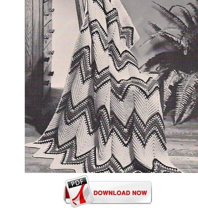

Click image for a larger view

Rippling River - Free Afghan Pattern
MATERIALS:
Easy to make in one piece, with no sewing together, in simple single crochet.
COATS & CLARK'S "RED HEART" KNITTING WORSTED, 4 Ply (4 oz. "Tangle-Proof" Pull-Out Skeins): 11 skeins of No. 717 Salmon, 4 skeins of No. 283 Dk. Rust and 3 skeins of No. 12 Black.
Crochet Hook Size H. Afghan measures 46 x 70 inches
GAUGE: 4 sts = 1 inch; 15 rows (down center of a point) = 5 inches. With Salmon, ch 245 (4 ch sts to 1 inch).
1st row: Sc in 2nd ch from hook and in next 18 ch, (3 sc in next ch, sc in next 19 ch, skip next 2 ch, sc in next 19 ch) 5 times; 3 sc in next ch, sc in remaining 19 ch. Ch 1, turn.
Pick up back loop only of each sc throughout.
2nd row: Skip first sc, (sc in next 19 sc, 3 sc in next sc, sc in next 19 sc, skip next 2 sc) 5 times; sc in next 19 sc, 3 sc in next sc, sc in next 18 sc, skip next sc, sc in last sc. Ch 1, turn.
3rd through 8th row: Repeat 2nd row. Do not ch 1 at end of 8th row. Drop Salmon, attach Black, ch 1, turn.
9th row: Sc in first sc, * (make an sc in the sc directly below next sc of next-to-last row long sc made; skip the sc covered by the long sc, sc in next sc) 9 times; make a long sc over next sc as before, skip the covered sc, sc in next st, long sc in same place where last long sc was made point made; (skip the covered sc, sc in next sc, long sc over next st) 9 times; skip the covered sc, sc in next 2 sc. Repeat from * across, ending with sc in last sc. Ch 1, turn.
10th row: With Black, repeat 8th row. Break off and fasten Black. Pick up Salmon, ch 1, turn.
11 th and 12th rows: Repeat 2nd and 8th rows. Break off and fasten Salmon. Attach Rust, ch 1, turn.
13th row: With Rust, repeat 9th row. Next 5 rows: Repeat 2nd row 4 times, then repeat 8th row once. At end of last row break off and fasten Rust. Attach Salmon, ch 1, turn.
19th and 20th rows: Repeat 9th and 8th rows. Drop Salmon, attach Black, ch 1, turn.
21st and 22nd rows: Repeat 9th and 8th rows. Break off and fasten Black. Pick up Salmon, ch 1, turn.
23rd through 37th row: Repeat 2nd row.
38th row: Repeat 8th row. Repeat last 30 rows (9th through 38th row) 5 times more, then work 9th through 30th row once. Break off and fasten. Block to measurements.
Edging: 1st row: With right side facing, using Salmon, sc closely along one long edge. Turn. 2nd row: With wrong side facing, sl st in each sc of previous row. Break off and fasten. Work edging along opposite long edge.
Home